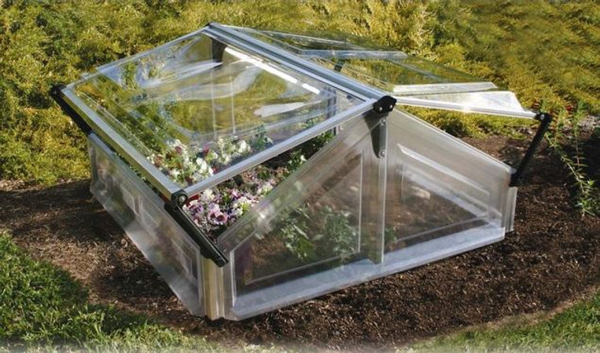
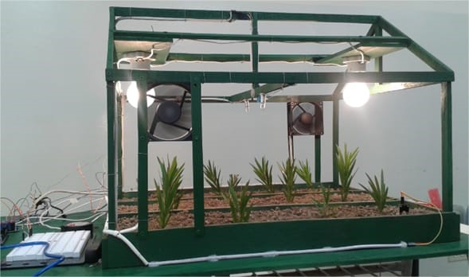
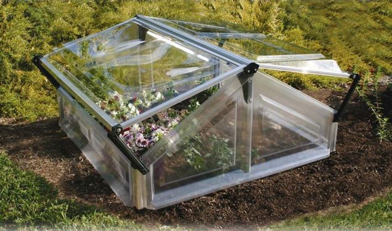
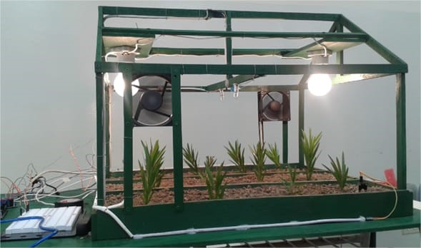

Modelos de automatización
Incorporamos en nuestra tecnología software y hardware Arduino lo que permite bajar costos de diseño y asegurar servicios de postventas y mantenimiento.
 Slogan de tu compañía de turismo
Incorporamos en nuestra tecnología software y hardware Arduino lo que permite bajar costos de diseño y asegurar servicios de postventas y mantenimiento.
 